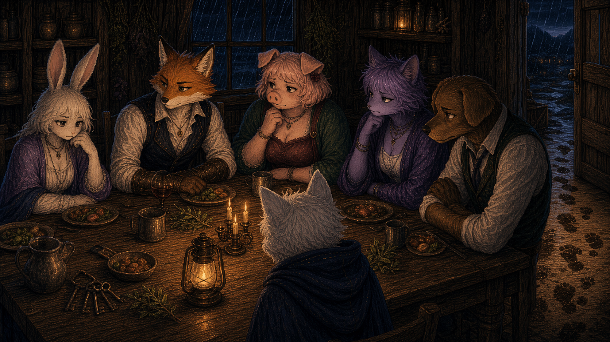

版本-V0.1.0
DOWNLOADEStillWater 预览

游戏简介
静水岛-这一次，你会记得多少？
一场发生在孤岛上的谋杀，一段不断重启的时间循环，以及一群始终不肯说出全部真相的居民。
你在第 1 天清晨抵达静水岛。这里安静、潮湿、秩序井然，却处处透着不该存在的熟悉感。
居民们看似平静地生活着：有人管理食物，有人管理秩序，有人逃避债务，有人害怕过去，有人像早已知道结局一样注视着你。直到第三天清晨，某人的死亡打破了这脆弱的平衡。
尽可能的调查每个人隐瞒的那一部分真相，同时靠自己生存下去。你会发现，真正可怕的也许不是谁杀了谁，而是为什么这一切已经发生过不止一次。
特色介绍
- 在日常生活与悬疑调查之间推进剧情
- 通过对话、偷听、线索搜查逐步拼出真相
- 每位居民都有动机，也都有无法坦白的秘密
- 时间循环？还是虚构的记忆？
- 多结局路线：维持封印，或打破循环（制作中！）
游戏中部分绘图使用了AI